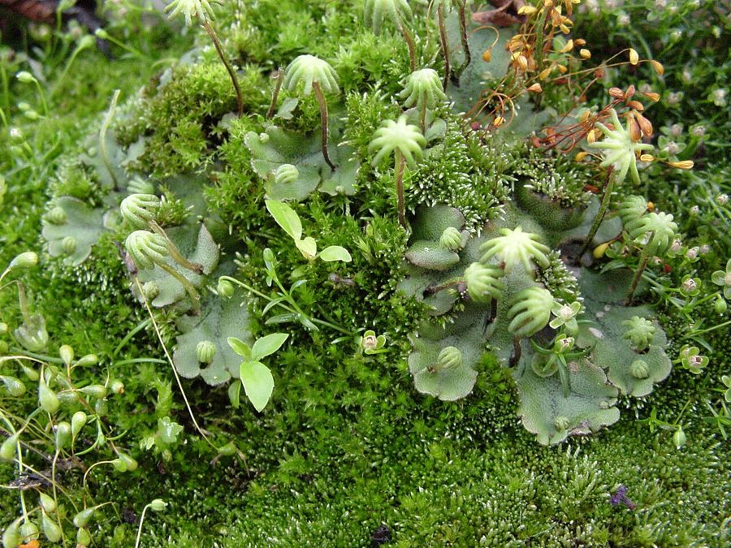

काई (गुच्छेदार)Common Liverwort
Marchantia polymorpha · Marchantiaceae · FLR-0155

- Scientific name
- Marchantia polymorpha L.
- Family
- Marchantiaceae
- Hindi
- काई (गुच्छेदार)
- Local names
- kai, bhumi kai, chhatri kai, liverwort
- Status here
- native
- IUCN
- not evaluated
- Review
- audited and independently read
When to look कब देखें
Present all year.
Uses and possibilities उपयोग और संभावनाएँ
Drawn from the documented uses in the profile below, where each is labelled traditional, current or a research lead. All uses →
काई / Common Liverwort
Marchantia L. — Marchantiaceae
गुच्छेदार काई (मार्चेंशिया) — दीवारों, पत्थरों और नम ज़मीन पर उगने वाली एक बहुत ही पुरानी किस्म का पौधा जो मनुष्य के उदय से भी पहले से ज़मीन पर है। इसकी पत्तियाँ (या कहें शरीर) हरी, कोमल, सपाट, डिब्बाबंदी (lobed) होती हैं और अक्सर "छतरी" जैसी संरचनाएँ दिखाई देती हैं जो नर या मादा जनन अंग होती हैं। पानी पर निर्भर है लेकिन मिट्टी में नहीं उगती। घर की दीवारों पर, फिल्टर के पास, नल के नीचे हमेशा दिखती है।
Quick Identification त्वरित पहचान
| Feature | Description |
|---|---|
| Form | Flat green thallus (plant body), 1–3 cm across, lobed or fan-shaped, arranged in rosettes |
| Lobes | Rounded, notched at the margin, overlapping like roof tiles |
| Underside | Pale, with root-hairs (rhizoids) and ventral scales; no true roots |
| Reproductive structures | Umbrella-like stalked discs (gametophores) in the centre; male or female |
| Texture | Fleshy, gelatinous, moist; dries to a dark scrap, revives when wetted |
| Colour | Bright green to yellowish-green |
Field tip: On a damp stone wall, or near a spring seeping from a bank, look for overlapping fleshy green lobes like a lettuce, with no roots. In the centre, miniature umbrella-like structures on thin stalks. That is a liverwort.
हिंदी — कैसे पहचानें: नम दीवार या पत्थर पर हरी, नरम, कोमल पत्तियों जैसी रचना; जड़ें नहीं; छतरी जैसी संरचना।
Morphology आकारिकी
Biometrics (northern Indian populations):
| Measurement | Range |
|---|---|
| Thallus diameter | 1–3 cm |
| Lobe width | 2–5 mm |
| Thallus thickness | 0.5–2 mm |
| Gametophore stalk height | 5–15 mm |
| Spore diameter | 50–100 µm |
Thallus: The plant body is a flat, fleshy ribbon with lobed or fan-shaped outline, several cell layers thick; no vascular tissue; air chambers present in the upper layer.
Rhizoids and scales: Single-celled root-hairs anchor the plant; ventral scales, often purple or brown, protect the growing tip and cover the underside.
Sex organs and reproduction: Marchantia is frequently dioecious (male and female organs on separate plants). Male structures release swimming sperm; female structures produce eggs in flask-shaped archegonia (egg chambers). After fertilisation, a spore-producing capsule develops inside the thallus.
Spores: Large, sculptured, with wall patterns; released when the plant dries and decays; germinates in wet season.
हिंदी: पौधे का शरीर सपाट फीता है, नरम, खोखले कक्षों वाला; पानी-पर निर्भर प्रजनन; बीजाणु बहुत बड़े, पैटर्न वाले।
Behaviour & Ecology व्यवहार और पारिस्थितिकता
Liverworts were among the first land plants, over 400 million years ago, and Marchantia still lives as they did: on wet surfaces, needing water for sexual reproduction. It colonises damp stone, brick, masonry, and soil quickly, forming a soft green mat that stabilises loose surfaces. The thallus holds moisture and provides shelter for springtails, tiny snails, and soil invertebrates. Marchantia breaks down rock and brick, participating in soil formation, and its decay adds organic matter.
The plant can also reproduce asexually from small disc-like bodies (gemmae) that form on the thallus and disperse in water or on damp ground.
हिंदी: सबसे पुराने किस्म के पौधे। दीवार-पत्थर को नरम करता है। पानी की बूँदों में बीजाणु तैरते हैं। घोंघों और कीड़ों का घर।
Life Cycle / Phenology जीवन चक्र
| Month / season | Event |
|---|---|
| June–August | Growth during monsoon on wet surfaces |
| September–November | Gametophores (sex organ stalks) develop; gamete production |
| December–February | Spore capsules mature and release spores |
| March–May | Spores germinate on wet surfaces; young thalli appear |
हिंदी: बरसात में पर्ण संरचना, ठंड में पुनरुत्पादन संरचना, गर्मी में बीजाणु।
Associated Species / Interactions संबंधित प्रजातियाँ
- Fellow pioneers: Crystalwort on soil; mosses on damp ground; small liverworts on walls.
- Invertebrate habitat: Springtails, mites, small snails; enchytraeid worms.
Pests and Diseases कीट और रोग
- Grazed by snails and springtails; parasitised by soil fungi.
- Generally healthy; part of the natural ecosystem.
Agricultural / Human Relevance कृषि प्रासंगिकता
Traditional and Ethnobotanical Use: Traditional medicinal use is not well-documented in Indian texts for the genus Marchantia. In traditional Chinese medicine, a related species is used; no verified use in the region has been recorded.
Rock and masonry: The plant's growth helps in chemical weathering of rock and may eventually contribute to masonry damage on very old structures, though this occurs over decades.
Today: Valued by botanists and ecologists as a pioneer species and indicator of damp microhabitats. Of no economic use to villagers.
Research direction (a lead, not a result). The enzymatic weathering capacity of liverwort colonies on stone has been studied in published literature; restoration ecologists now use liverworts to stabilise degraded banks.
हिंदी: दवा में इस्तेमाल नहीं किया जाता। पत्थर को नरम करने में मदद करता है। जलवायु का सूचकांक।
Expected Locally स्थानीय रूप से अपेक्षित
Not a field record. Written from published accounts for eastern Uttar Pradesh. No confirmed local sighting yet — if you have seen it, that is what the atlas needs.
अभी तक स्थानीय पुष्टि नहीं। यह विवरण प्रकाशित स्रोतों से है, किसी अवलोकन से नहीं।
To be expected on damp walls, springs, wet rocks, and shaded moist ground across the district from June to May. Any photograph of the umbrella-like reproductive structures is a confirmed record for the genus.
Distribution वितरण
Global range: The genus is widely distributed in temperate and tropical regions worldwide; Marchantia polymorpha is cosmopolitan.
In India: Widespread in all states with moist microhabitats; the Gangetic plain and the Himalayas are classical regions.
In Uttar Pradesh: Common on damp walls and springs throughout.
In Basti district / eastern UP: Expected on every damp wall and seepage area.
Research Questions शोध प्रश्न
Anyone can investigate these | कोई भी इन प्रश्नों की जाँच कर सकता है
- How many different liverwort species grow on the damp walls of your village? — Photograph each; compare with Riccia.
- Do the umbrella-like structures only appear in certain months? — Visit monthly and record.
- How fast do the thalli spread from one stone to the next? — Mark a colony and measure growth monthly.
- What small animals live under the thalli? — Lift one onto white paper and observe with a lens.
- Can a school microscope show the spore patterns? — Crush a mature plant in January and look.
Similar Species मिलती-जुलती प्रजातियाँ
| Species | How to tell apart | हिंदी |
|---|---|---|
| Crystalwort | Smaller thalli (coin-sized), forked lobes, no umbrella structures | छोटी, कोई छतरी नहीं |
| Mosses | Tiny leafy stems, not flat ribbons | पत्तियों वाली डालियाँ |
| Star Jelly | Jelly-like, no shape, gone in a day of sun | जेली, आकार नहीं |
Field rule: A flat, fleshy green mat with lobed edges and umbrella-like stalked discs in the centre, on damp walls or rocks, is a liverwort of the genus Marchantia.
Taxonomy & Classification वर्गीकरण
Original description. The genus Marchantia was established by Carl Linnaeus in Species Plantarum (1753: 1138). It is named after Giovanni Marchant, an 18th-century Venetian botanist. The species polymorpha refers to the variable form of the thallus.
Subspecies/Species: The genus contains several species; Marchantia polymorpha is the most widespread and variable; others (M. quadrata, M. paleacea) are less common but occur in Asia.
Family and order placement: Marchantiaceae, order Marchantiales, class Marchantiopsida, phylum Marchantiophyta.
Phylogenetic notes: Liverworts (Marchantiophyta) are one of the three lineages of bryophytes and are among the earliest-diverging land plants. Marchantia is a large genus with a fossil record extending back into the Cretaceous.
IUCN status rationale. Not evaluated at genus level. Marchantia polymorpha is abundant and stable globally.
Photo Gallery फोटो गैलरी
Photos needed आवश्यक फोटो
- [ ] Colony on damp wall showing lobed thallus (दीवार पर काई)
- [ ] Umbrella-like male gametophores (नर छतरी)
- [ ] Underside with rhizoids and scales (नीचे का हिस्सा)
Atlas Connections संबंधित प्रजातियाँ
- Crystalwort — another liverwort; smaller, coin-sized rosettes on soil
- Star Jelly — shares the wet habitat but is cyanobacteria, not a plant
References संदर्भ
- Linnaeus, C. (1753). Species Plantarum, vol. 2, p. 1138. Stockholm. [original description of genus]
- Kashyap, S.R. (1929). Liverworts of the Western Himalayas and the Panjab Plain, part 2. University of the Panjab, Lahore.
- Pandé, S.K. (1958). Some aspects of Indian Hepaticology. Journal of the Indian Botanical Society 37: 1–26.
- Udar, R. (1976). Bryology in India. Chronica Botanica, New Delhi.
- Schuster, R.M. (1992). The Hepaticae and Anthocerotae of North America, vol. 6. Field Museum, Chicago. [genus treatment]
- Vanderpoorten, A. & Goffinet, B. (2009). Introduction to Bryophytes. Cambridge University Press.
- GBIF Occurrence Data — Marchantia, India (2026).
Source file: species/lower_plants/liverworts/marchantia.md